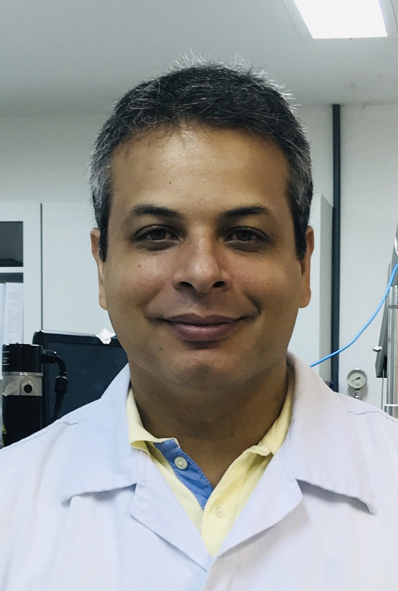

Dra. Alessandra Lifsitch Viçosa
Farmacêutica Industrial, mestre em Ciências Farmacêuticas e doutora em Ciência e Tecnologia de Polímeros. Atualmente é líder do Laboratório de Farmacotécnica Experimental (LabFE) de Farmanguinhos/Fiocruz onde já atua por 16 anos. São mais de 22 anos inserida na indústria farmacêutica, nacional e multinacional trabalhando em diferentes áreas como: controle de qualidade, produção e desenvolvimento analítico e galênico. Foi na pesquisa e desenvolvimento de medicamentos com foco em farmacotécnica e tecnologia farmacêutica que se especializou. Durante estes anos, teve a oportunidade de viver os diferentes desafios do desenvolvimento abrangendo as variadas formas farmacêuticas desde a escala laboratorial até a industrial. Com um olhar multidisciplinar, foi desenvolvendo também conhecimento na área de estado sólido e físico-químico de insumos e produtos farmacêuticos. A vivência industrial forneceu grande experiência na otimização de processos e foi através das atividades de assistência à produção que permitiu absorver o conhecimento para enfrentar problemas decorrentes das etapas de industrialização e aumento de escala de novos produtos farmacêuticos. Além disso, possui uma forte inserção na área educacional, sendo docente de uma série de cursos de capacitação em nível de graduação e pós-graduação. Sempre se mostrou interessada e com aptidão para desempenhar o papel de orientação de alunos, o qual tem exercido frequentemente em diversos cursos, com maior ênfase na área farmacêutica. Em função destas diferentes áreas de atuação, pode perceber a real necessidade de cursos menos teóricos e mais objetivos e com foco na prática da indústria farmacêutica. E foi assim que idealizou o presente curso para auxiliar na geração de novos conceitos de aprendizado que visam aproximar estas duas realidades tão complementares entre si.
Dr. Thiago Frances Guimarães

Farmacêutico e Bioquímico com mestrado e doutorado em Ciências Farmacêuticas. Chegou em Farmanguinhos / Fiocruz no ano de 2008, trabalhando no desenvolvimento farmacotécnico de produtos tuberculostáticos e há dois anos é colaborador do Laboratório de Farmacotécnica Experimental (LabFE). Durante os anos atuando no desenvolvimento farmacotécnico, teve a oportunidade de desenvolver projetos com outros laboratórios públicos e privados, ampliando o conhecimento sobre diferentes equipamentos e instalações industriais. Por ter atuado como professor de graduação, não demorou a ingressar como docente no curso de pós-graduação lato sensu de Farmanguinhos, onde pode contribuir para a formação de diferentes profissionais (biólogos, químicos, farmacêuticos…). Após conhecer a dificuldade de diversos alunos no aprendizado de Tecnologia Farmacêutica, concordou colaborar na criação deste curso, por acreditar ser uma ferramenta inovadora na formação de futuros profissionais.